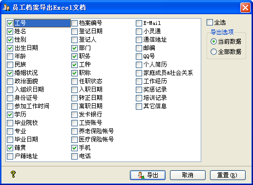

| 数据维护 - 导出Excel文档 |
|
秋风人事档案管理系统允许您方便地进行数据导出为Excel文档，且此操作可以在没有安装Microsoft Excel的计算机上执行，其操作界面如下图示：  它默认勾选的是您设置的员工档案信息列表所显示的字段，加上没有显示的[个人简历]后面的一些信息；若您指定的Excel文件中已有sheet表，则系统会自动sheet_x为表名存储。这里有两个导出选项：当前数据及全部数据。 若您选择的是当前数据，导出为Excel文档的，只是当前表格中显示的员工档案列表。 而当您选择的是全部数据，则导出为Excel文档的，是所有的员工档案信息，包括在职员工与离职员工。 |